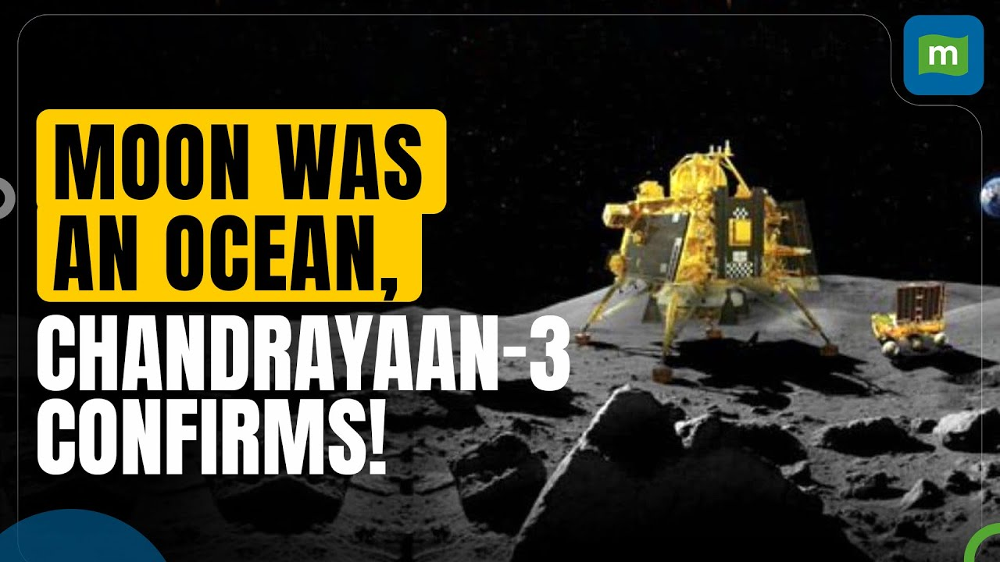
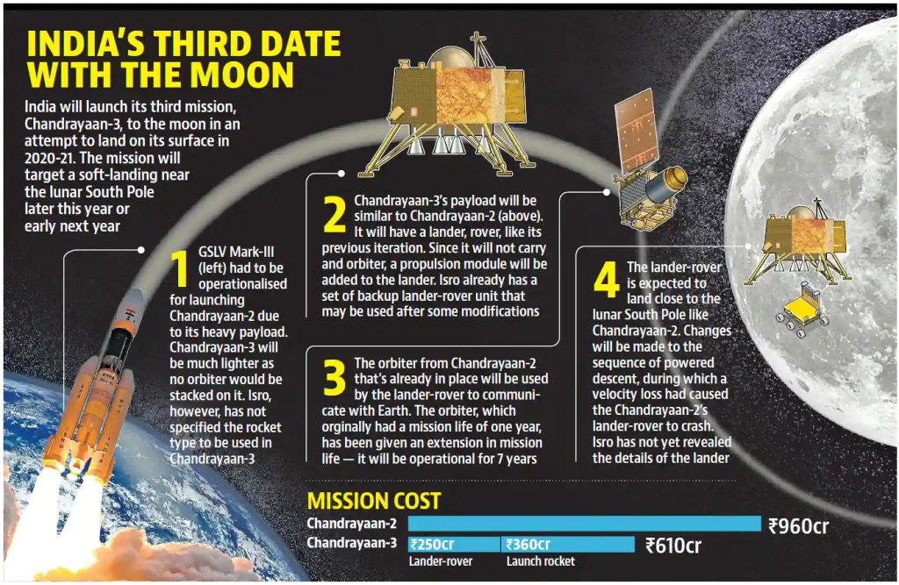

Chandrayaan-3
 
Chandrayaan-3's data suggests a magma ocean on the moon A study published in Nature suggests that the moon may have once had a magma ocean. The data was gathered by the Pragyan rover during its exploration of the moon's surface.